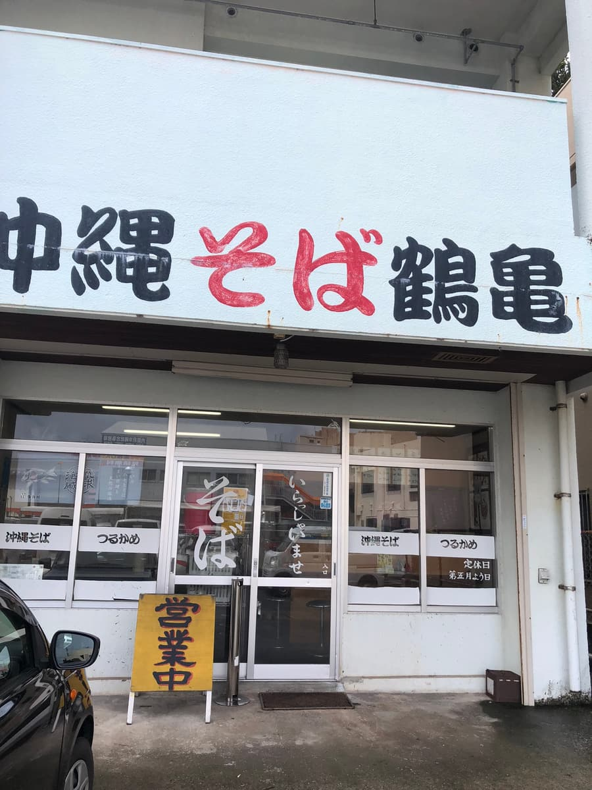
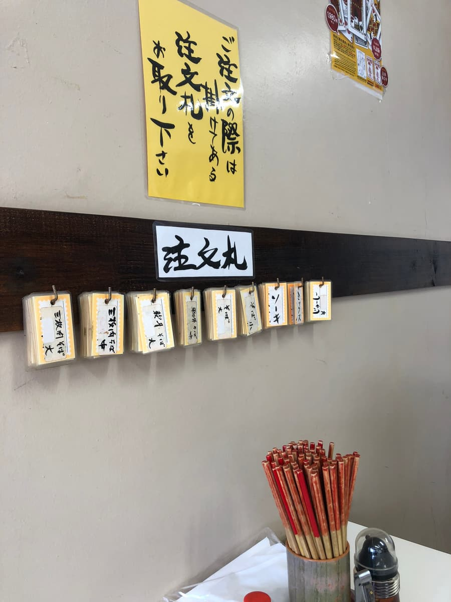
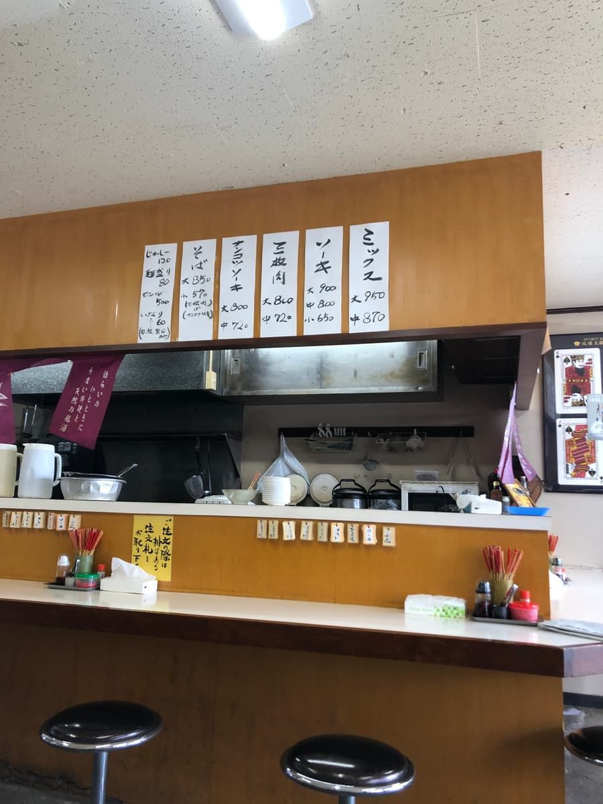
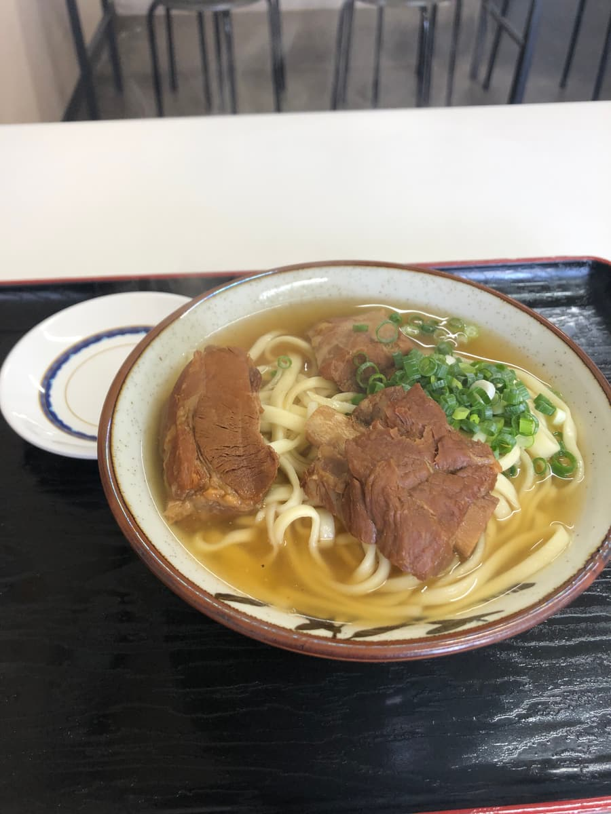
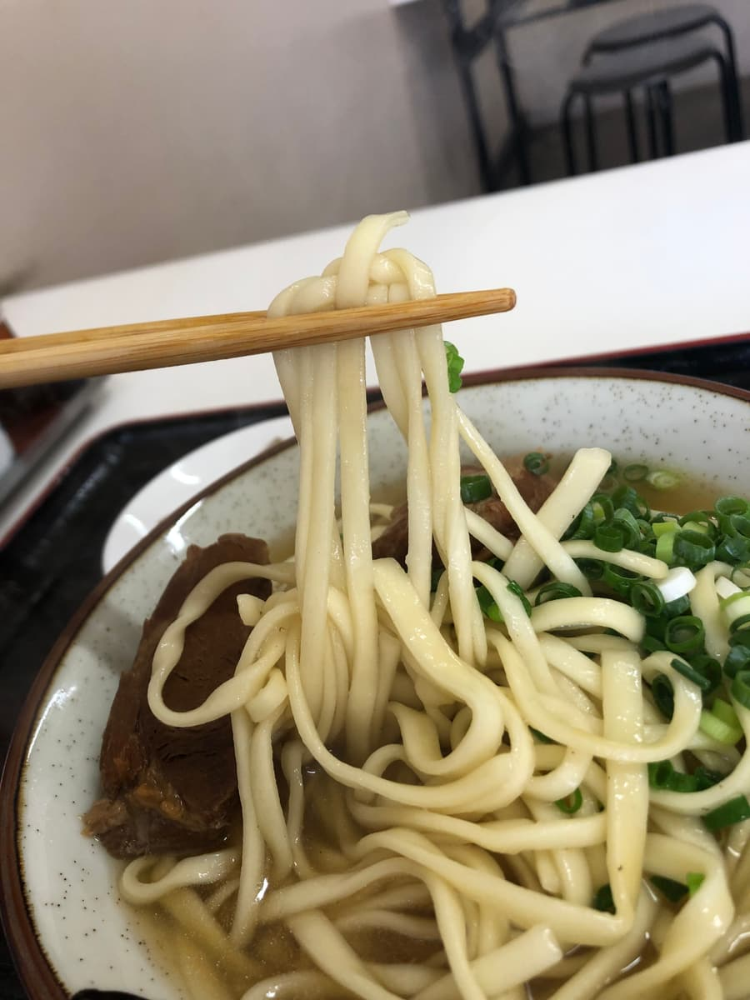
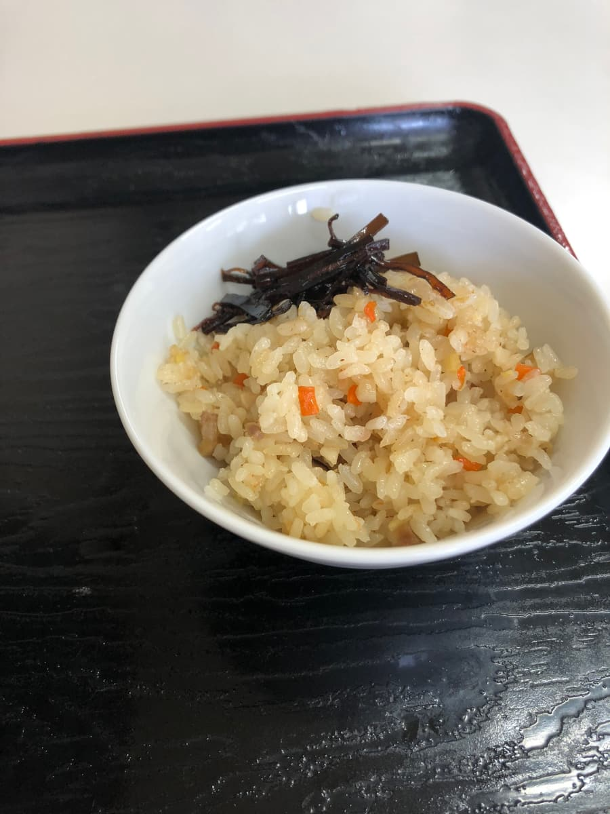

※こちらの記事はClaude 3.5 SonnetのAIで作成したものに一部加筆しました。
沖縄本島の沖縄そば屋を制覇すべく、日々食べ歩きを続けています😄 2024.9に食べに行きました😄
今回は浦添市牧港にある「鶴亀」さんに訪問してきました。


店構えは昔ながらの雰囲気を感じさせる佇まいで、白壁に「中縄そば」の文字が印象的です😊 店内に入ると、壁には注文札が掛けられていて、昔ながらの商売スタイルを今でも大切にされているのが伝わってきますね。
メニューの中から王道の「ソーキそば」を注文することにしました。注文札を取って注文しようとすると店長から「大丈夫です」と。結局、注文札は不要で、口頭で注文できました(^0^;)


ソーキそば来ました😆 まずはスープから味わってみると、しっかりと鰹出汁が効いていて、普通に美味しい沖縄そばらしいスープですね😋

麺は中太のストレートタイプで、柔らかめの食感。具材のソーキは甘めの味付けで、これも王道な味わい。ただ、少し筋感が残っている部分もありましたね。
今回は「大」を注文したので、ボリュームはしっかりあります。さらにサービスでジューシーも付いてきて、あっさりとした味付けでこちらも普通に美味しく頂けました。ジューシーまで完食してお腹いっぱいになりましたね😆

評価（9点/15点）：普通に美味しい感じですね。老舗の雰囲気を感じながら、ゆっくりと沖縄そばを楽しめるお店です。浦添市に来られた際は、一度立ち寄ってみては如何でしょうか？😊
麺 ：★★★☆☆（3）
スープ：★★★☆☆（3）
具 ：★★★☆☆（3）